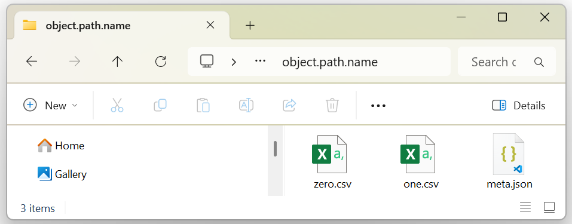

Base§
Recall from Plan that RomCom is an alphabetically ordered hierarchy. This page describes the beginning of RomCom’s alphabet.
The base package§
The functional foundation of RomCom is the base package. Names in the base namespace are exposed throughout rc without (package or module) qualification. Yes, wildcard imports have been used to expose the foundations.
The package consists of two modules.
base.definitions§
Provides nothing but basic Protocols, constants and Type annotations. The constants and Type annotations are simple and dull, but ubiquitous. The Protocols are abstract BaseClasses for documenting interfaces of RomCom Classes.
base.models§
Provides BaseClasses for RomCom software objects. These classes provide software objects which are always perfectly synchronized with the filesystem.
These Classes and their Protocols are the topic of the remainder of this page.
In essence, base.models provides the raw materials to build DataBases out of Tables (.csv) and Meta (.json).
Classes§
base.models (click for further details) comprises the following classes, from which much of RomCom derives.
Store§
An abstract base class whose objects are endowed with filesystem storage in self.path.
Every Class derived from Store has a (constant) classAttribute Store.ext specifying its file extension.
This is implicitly appended to any path communicated to the Store.
Store regards itself as the SuperClass of all files and folders.
MetaData§
Alias for Mapping[str, Any]. All Meta content must be of this Type.
Meta§
A concrete Store, consisting of MetaData stored in a .json file.
Matrix§
Alias for pl.DataFrame | Np.Matrix | Tc.Matrix. All Table content must be of this Type.
Table§
A concrete Store, consisting of a Matrix stored in a .csv file.
The Matrix held in any Table object is accessed in the desired ecosystem format as the property object.pl, object.np, or object.tc.
The classAttributes (i.e. constants) Table.readOptions and Table.writeOptions govern .csv file options.
These options are often tailored by SubClassing.
If you ever need bespoke .csv options, you must SubClass Table and override Table.readOptions
and/or Table.writeOptions, which is not onerous.
Every Table begins with a row of column Table.heads. Heads may join levels of categorization using the conjunction
Table.con = │.
This strange character is the utf8 Box Drawing Light Vertical (U+2502), which is unlikely to occur in user data.
Multi-row heads should be conjoined using Table.conjoinHeads(src, dst, headcount) upon entry.
RomCom is replete with SubClasses of Table fulfilling specific needs.
For example, DesignMatrix is a concrete subclass of Table designed to hold training data.
DataBase§
An abstract Store, containing NamedTables (a NamedTuple of Tables) with Meta.
The NamedTables of any DataBase object is the property object.namedTables,
its Meta the property object.meta.
Any concrete SubClass such as MyDataBase must define MyDataBase.NamedTables(NamedTuple)
which indexes MyDataBase.defaults() by MyDataBase.names().
For example, MyDataBase may define MyDataBase.NamedTables(NamedTuple) as:
NamedTables(NamedTuple)
zero: Table | Matrix | type[Table] = pl.DataFrame([0])
one: Table | Matrix | type[Table] = pl.DataFrame([1])
Tables: NamedTables[type[Table], ...] = NamedTables(zero=Table, one=Table)
The last line is required to tell the DataBase SubClass what Table Types to expect.
In this way, Tables encapsulates file options and, possibly other functionality.
Reflecting its programmatic content, an object of type MyDataBase instantiated with path would appear on the filesystem as
{kind=link}

Most every model in RomCom is some Type of concrete Database.
Protocols§
The Lifecycle of Software Objects in RomCom follows the conventional CRUD biography, told on the user’s filesystem. Software objects in RomCom are also named, and their content indexed and compared with other objects. The base Classes take responsibility for implementing these Protocols in RomCom, as follows.
CreateP§
Every derived Class(Store) possesses a Class.create(path) classMethod
returning an object of type Class created in path selectively (without affecting other files in path).
So any DataBase may safely reside alongside other files (or folders) in path and its parents.
Because Store considers itself a parent to all files and folders, Store.create(path) deletes everything in its path before creating it.
ReadP§
Every object of derived Class(Store) is read from path by its constructor object = Class(path)
defined in Class.__init__(path).
UpdateP§
Every object of derived Class(Store) is updated in place and written in object.path by the
function object(**kwargs) defined in __call__(self, **kwargs).
SubClasses frequently override __call__(self,**kwargs) to perform some calibration or optimization before writing.
DeleteP§
Every class derived from Store has a delete(path) classMethod
which deletes a Store in path selectively (leaving all other files intact).
So any DataBase may safely reside alongside other files (or folders) in path and its parent folders.
Because Store considers itself a parent to all files and folders, Store.delete(path) deletes everything in its path.
NameP§
The NameP Protocol provides str(object) = str(object.path.name) and repr(object) = str(object.path)
for any object derived from Store.
IndexP§
Items are retrieved from, and replaced in, Store objects using the IndexP Protocol. The Indexing Protocol enables expressions such as:
values = object[index] # Retrieves item(s) from object
object[index] = values # Replaces item(s) in object
len(object) # Counts the items accessible by Indexing
for index in object:
if index in object: print('is always True')
When index is Iterable, values must be a tuple[Table | Matrix, ...] of corresponding len.
IndexP is identical to Python’s concept of a sequence.
IndexP supports any index of Type
IndexP.Index§
Alias for str | int | Iterable[str | int] | slice. All index requests must be of this Type.
Meta§
IndexP refers to dict items, but writes updates to disk immediately.
Table§
IndexP refers to table.heads, so len(table) is its width (complementing len(table.pl) its height).
DataBase§
IndexP refers to database.namedTables.
EqualsP§
The EqualsP Protocol:
objectA == objectB
exhaustively compares content, except for location path.
If two objects of the same Type share the same path, they are surely identical for the filesystem is always synchronized with memory.
So the only interesting comparison is between objects whose path differs.
This is straightforward, but we should highlight some fine details of DataBase comparison.
DataBase§
Two DataBase objects are equal if and only if their .meta is equal, their .namedTables are equal,
and their .names() are equal. This is not the same as:
dataBaseA.meta == dataBaseB.meta and dataBaseA.namedTables == dataBaseB.namedTables
because NamedTuple equality does not compare field names.
Two equal DataBase objects need not be of the same Type, nor even share dataBaseA.NamedTables is dataBaseB.NamedTables.
They are equal if and only if their contents are equal.